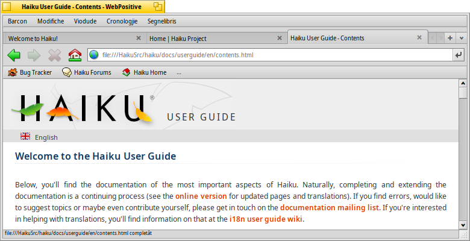
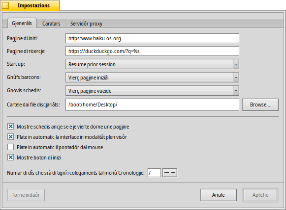
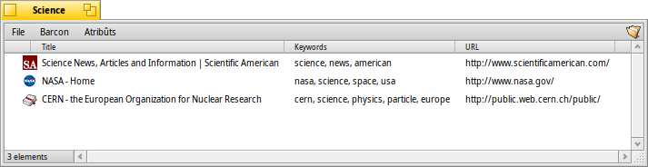
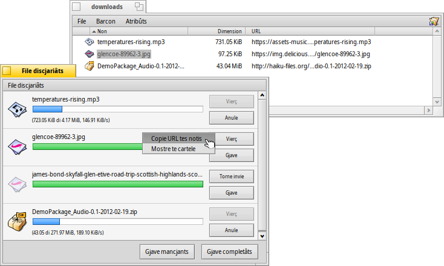

WebPositive
WebPositive
| Deskbar: | ||
| Posizion: | /boot/system/apps/WebPositive | |
| Impostazions: | ~/config/settings/WebPositive/ - File di configuration, cookie, cache e cronologjie di navigazion | |
| ~/config/settings/WebPositive/Bookmarks - Ducj i segnelibris come file singui |
WebPositive, o scurtât Web+, al è il navigadôr web natîf di Haiku. Une part dal so non al è par fâ onôr al sempliç NetPositive di BeOS, chê altre part pe sô fonde moderne: WebKit. Cheste librarie a codiç viert (open source) par visualizâ HTML, e je il cûr ancje di altris navigadôrs cognossûts, tant che Safari di Mac OS X e Chrome di Google. Doprant WebKit, che al è in continue evoluzion, Web+ al rivarà a lâ pâr a pâr cu lis gnovis tecnologjiis web.
La interface di WebPositive e je avonde semplice: Sot de sbare dai menù e je une altre sbare, lì si à botons par navigâ tra i sîts precedents e chei sucessîfs de tô cronologjie di navigazion, par fermâ il cjariament di une pagjine e (come opzion) un boton par saltâ ae tô pagjine iniziâl.
Dopo al rive il cjamp pe direzion dulà che si inserìs un URL di sît.
Sot di cheste sbare di navigazion a vegnin fûr lis pagjinis web. Tu puedis vierzi tantis pagjinis in paralêl cjariantlis intes lôr propriis schedis.
In bas tal barcon si à une sbare di stât, che e mostre il URL dal sît cjariât o dal colegament che al sta sot dal pontadôr dal mouse. Intant che une pagjine e ven cjariade, une sbare di avanzament e ven fûr a diestre.
 Impostazions
Impostazions
Dal menù tu puedis vierzi un panel par configurâ cualchi element essenziâl di WebPositive.
La prime schede e à a ce fâ cu lis impostazions gjenerâls: Cuâl file o URL al servìs tant che , Ce che si à di doprâ come , cuale doprâ pe robe che tu otegnis de rêt.
Doi menù a tende ti permetin di decidi cuale pagjine cjariâ - se si 'nd à cualchidune - cuant che si vierç un gnûf barcon o schede.
Gracie aes caselis di selezion lì sot tu puedis evitâ di mostrâ la sbare des schedis cuant che e je vierte dome une pagjine. Si pues dî ae interface di WebPositive di platâsi in automatic cuant che si è in modalitât plen visôr, e si pues platâ in automatic il pontadôr dal mouse ogni volte che nol ven mot par un pôc.
Ae fin, tu puedis decidi se includi il boton "Inizi" (chel de cjasute) inte sbare di navigazion e stabilî par trops dîs che il navigadôr al à di visâsi i sîts che tu âs visitât, lassantju inte sô cronologjie.
Inte seconde schede tu puedis sielzi i caratars doprâts in maniere predefinide, i caratars serif, no-serif e a spaziadure fisse e stabilî lis lôr dimensions predefinidis.
La ultime schede e ven doprade par configurâ li servidôr proxy.
Sgarfâ
Se prime di cumò tu âs za doprât un cualsisei navigadôr, WebPositive nol varès di creâti masse sorpresis. Invezit di lâ a viodi ogni element e funzionalitât dai menù, din une voglade juste a cualchi pont.

Lis gnovis schedis a vegnin creadis cul boton + a diestre inte sbare des schedis opûr, se si à ancjemò vonde spazi, fasint dopli clic suntune sô aree vueide. Se si à viertis plui schedis di chês che a puedin stâ inte sbare, i botons di scoriment < > a deventin atîfs, permetint cussì di scori la sbare des scedis a çampe e a drete. il boton ∨ plui in là a diestre al ospite un menù a tente cun dutis lis schedis viertis, par vê une navigazion ancjemò plui svelte.
Fasint clic suntun colegament cul boton centrâl dal mouse al vierzarà la pagjine intune gnove schede in sotfont. Tignint MAIUSC intant che si fâs il clic centrâl, lu vierç in prin plan.
Dal menù tu puedis fâ e di une pagjine. Si à ancje la opzion par dî , lassant dutis lis imagjins aes lôr dimensions origjinâls.
Se tu passis ae modalitât plen visôr e tu âs ativât la impostazion par platâ la interface, chê e sparirà dopo un secont. Par fâle vignî fûr un moment, al baste spostâ il pontadôr te te part superiôr dal schermi.

Intant che tu scrivis intal cjamp di test pes direzions web, il navigadôr al cumbine la stringhe cui sîts che tu âs za visitât e ju liste lì sot. Tu puedis continuâ a zontâ letaris, cussì di scurtâ la liste opûr sielzi une vôs cun ↑ o ↓. INVIE al cjariarà la pagjine. Tu puedis ancje doprâ il boton lontan a diestre che al servìs par tornâ a cjariâ la pagjine.
Lis stringhis che no vegnin ricognossudis tant che URL a vignaran cirudis in Google, cussì il cjamp pe direzion al doplee la sô funzion tant che rapide scurte pes ricercjis sul web.Fasint clic diestri si vierç un menù contestuâl che, in base al ogjet che si à fat clic, al ufrìs la pussibilitât di vierzi il colegament intung gnûf barcon o intune gnove schede, discjariâ l'ogjet e vie indenant.
al mostre une sbare di ricercje in bas par scomençâ une ricercje inte pagjine. I risultâts inte pagjine che a corispuindin a vegnin evidenziâts.
Segnelibris
I segnelibris di WebPositive a vegnin gjestîts in ~/config/settings/WebPositive/Bookmarks/, tant che i file e lis cartelis. Zontant un segnelibri si crearà lì un gnûf file. Tu puedis vierzi daurman la cartele cun .
Tu puedis cambiâ un URL di segnelibri, un non, un titul e inserî peraulis clâf juste come cualsisei altri file: cui atribûts. Siguriti dome di vê visualizadis dutis lis lôr colonis midiant il menù di Tracker, dopo selezione un file, frache ALT E e tache a modificâ l'atribût; cambie lis colonis dai atribûts cun TAB.
Tu puedis ordenâ i segnelibris in cartelis diviersis che tu puedis creâ tu stes.
Doprant Tracker par gjestî e navigâ tra i segnelibris tu puedis zovâti des sôs funzionalitât unichis par cirî cun rapiditât ce che ti interesse.
Ativant il intes preferencis di Tracker, tu puedis intun lamp scurtâ la liste dai segnelibris in base ae tô stringhe-filtri. Cun cualchi ↑ o ↓ par spostâ la selezion e fracant INVIE al vierzarà il sît. Sigurit di visualizâ dutis lis colonis dai atribûts par vê il filtri aplicât al non, titul, URL e peraulis clâf.
Par che chest al funzioni, ducj i segnelibris a àn di sei tignûts inte cartele ~/config/settings/WebPositive/Bookmarks/ e dome lis copiis a àn di jessi ordenadis in sot-cartelis personalizadis pal ûs intal menù Segnelibris di WebPositive (in câs). In plui, meti atribûts di peraulis clâf al jude...
File discjariâts
al vierç un barcon che al liste ducj i discjariaments passâts e in vore:
I file che si sta discjariant a vegnin mostrât cuntune sbare di avanzament che e cres e, in maniere simile al copiâ i file in Tracker, informazions su la velocitât di discjariament, la dimension dal file e l'ore previodude di fin. I botons a diestre ti permetin di fâ sui discjariaments e , o par vierzi il file, o par gjavâ la sô vôs de liste. I botons e in bas a eseguissin chês azions su dutis lis vôs de liste. “Mancjants” a son i file che intant a son za stâts eliminâts.
Spostâ te Scovacere un file che si sta discjariant al fermarà il discjariament. Tu notarâs ancje, che la sô icone e devente “smamide”.
In gjenerâl, WebPositive al è une vore tolerant cuant che si trate di gjestî i file cun Tracker. Si pue cambiâ i nons ai file o spostâju ancje intant che si ju sta discjariant e ancje dopo finît di discjariâ, chestis modifichis si rifletin tal barcon dai File discjariâts.
No tu ti impensis di cuâl sît tu âs discjariât chel pachet, imagjin o cualsisei altri file? Tu puedis rivâ a vê chê informazion vierzint Scandai dal disc e butâ un voli al so atribût META:url.
Desideristu vê simpri in viste il URL inte tô cartele dai file discjariâts? Al baste copiâ un segnelibri dentri, vê mostrade la colone dal atribût URL di un segnelibri e tornâ a gjaviâ il segnelibri.
Scurtis di tastiere
Chi e je cualchi scurte di tastiere utile:
| ALT T | Al vierç une gnove schede. | |
| ALT W | Al siere la schede atuâl. | |
| ALT N | Al vierç un gnûf barcon. | |
| MAIUSC ALT W | Al siere il barcon atuâl. | |
| ALT INVIE | Al comute la modalitât plen visôr. | |
| ALT R o F5 | Al inzorne la pagjine atuâl. | |
| ALT H | Al vierç la pagjine iniziâl. | |
| ALT D | Al mostre/plate il barcon File discjariâts. | |
| ALT F | Al mostre la sbare “cjate” pes ricercjis te-pagjine (plate cun ESC). | |
| ALT B | Al met tai segnelibris la pagjine atuâl. | |
| ALT M | Gjestî i segnelibris, vierzint la cartele dai segnelibris. | |
| ALT ← | Pagjine precedente te cronologjie di navigazion. | |
| ALT → | Pagjine sucessive te cronologjie di navigazion. |